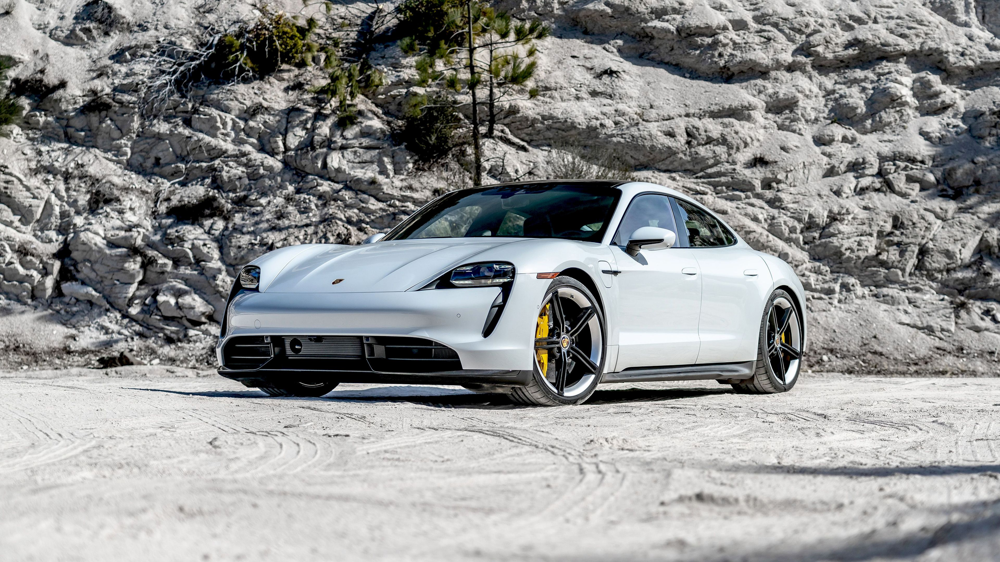
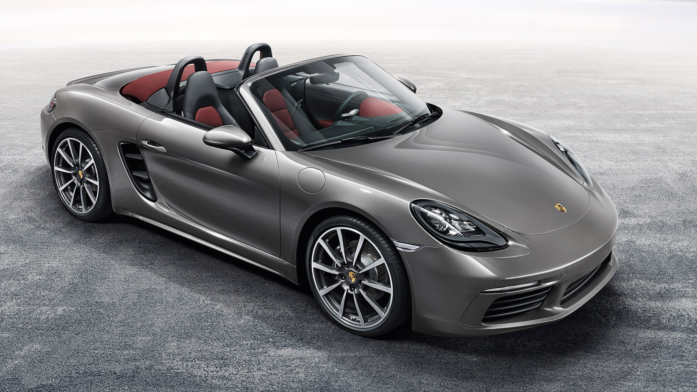

PORSHE
PORSCHE 911 GT3
Porsche 911 GT3 is the petrol variant in the 911 lineup and is priced at ₹ 2.50 Crore.It returns a certified mileage of 9 kmpl. This GT3 variant comes with an engine putting out 503 bhp @ 8400 rpm and 470 Nm @ 6100 rpm of max power and max torque respectively. Porsche 911 GT3 is available in Automatic (Dual Clutch) transmission and offered in 10 colours: Black, Gentian Blue Metallic, Jet Black Metallic, Agate Grey Metallic, GT Silver Metallic, Guards Red, Dolomite Silver Metallic, White, Racing Yellow and Carrara White Metallic.

PORSCHE 718
The Porsche 718 has 2 Petrol Engine on offer. The Petrol engine is 1988 cc and 3995 cc . It is available with Manual & Automatic transmission.Depending upon the variant and fuel type the 718 has a mileage of & Ground clearance of 718 is 128mm. The 718 is a 2 seater 6 cylinder car and has length of 4456mm, width of 1994mm and a wheelbase of 2475mm.
PORSCHE TAYCAN
Porsche Taycan Electric Motor, Battery and Range: The Taycan gets two battery pack options depending on the variant: 79.2kWh and 93.4kWh. All variants of the electric vehicle have a WLTP-claimed range of over 400km. Porsche is offering the Taycan with both single- and dual-motors. Porsche Taycan Features: It has a central 10.9-inch touchscreen infotainment system and a third vertically stacked display in the centre console for the climate controls. Other features include dual-zone climate control, 18-way power-adjustable sports seats (on the Turbo S), an optional 710W 14-speaker BOSE sound system (again on the Turbo S), and a powered tailgate.